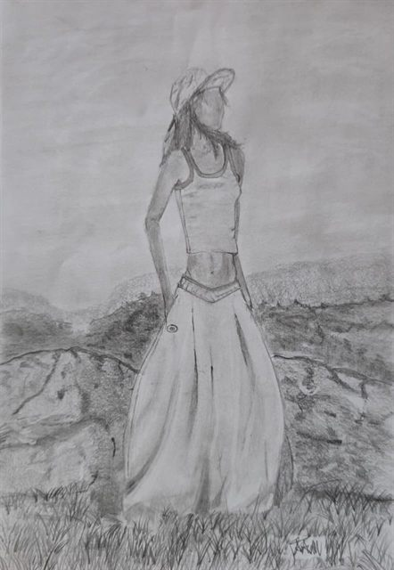
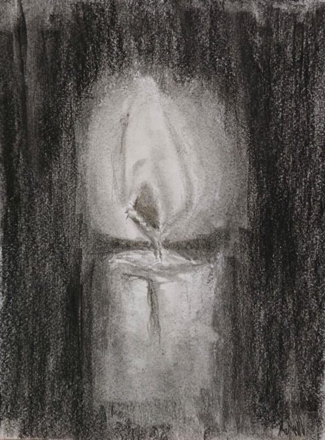

Saltar al contenido
Meraki
Academia Arte-Café
← Volver
Artista
Tawan Molano
Sobre el artista
Dibuja en grises y juega con la luz y las sombras.
Obras · 3 obras
Corsé
Tawan Molano

Mujer en el campo
Tawan Molano

Vela
Tawan Molano